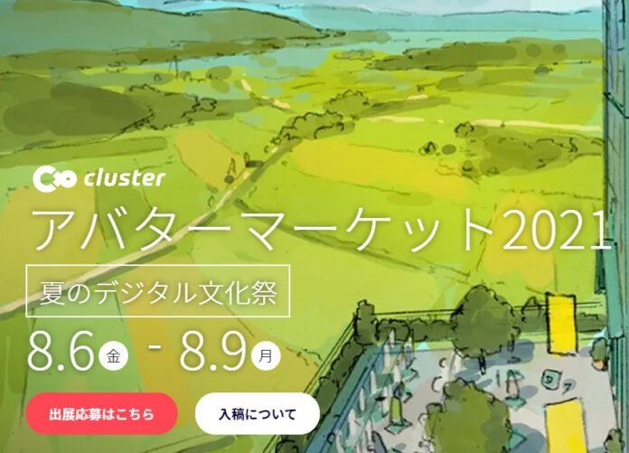

皆さんは、イベントに参加したことはあるでしょうか？あのようなイベントを開こうと思ったことはありませんか？
しかし、｢スマホだけでパソコンないし…｣｢何するか考えつかない…｣と思っている人も多いと思います。
実は、イベントを開くことは意外と簡単なのです。(実際、筆者もスマホからログインしています)
イベントの開き方はclusterの公式サイトから＋マーク→新しいイベントを押し、日時やタイトルなどの必要情報を入力して、公開するだけ。(スマホの場合、横持ちじゃないと+マークが出てこないので注意。)
試しに筆者がイベントを開いてみると、何をするかは特に決めていなかったにも関わらず、いろんな人がきてくれました。
このようにイベントで何をするかは、なんでもいいのです。
テーマを決めておしゃべりするも良し、何か企画を用意してみんなで遊ぶもよし、皆さんも、自由な発想で、どんどんイベントを開いてみてください。
(オリゴ糖)
スマホ、パソコン、VRデバイスから参加できるバーチャル空間のアバターの展示即売会『アバターマーケット』がVR SNS『cluster』にて開催されることが発表されました。

2021年3月にも『cluster大加速祭2021』のイベントの一部として『アバターマーケット』が開催されていましたが、今回は独立したイベントとして開催が予定されています。
『アバターマーケット』はclusterのアバター販売機能を使い、プラットフォーム内でアバターをその場で購入・その場で着替えられる点が大きな魅力。
アバター制作や導入の知識がなくともすぐに遊べるので、VR空間に初めて遊びに行く人でも事前準備なく楽しむことが出来ます。
イベントは参加・出展ともに無料。
出展した際の売上は1クラスターコイン＝1円として100％還元されます。
(バーチャルライフマガジン)
2021年7月9日(金)、ぱんだ歌劇団による「シンデレラ」公演が行われます。
場所：cluster (入場無料)
開場 20:30 ／ 開演 21:00
※予約不要・500人まで入場可・スマホOK。
※YouTube「ききょうぱんだ」にてLive配信予定あり。
【後援】NPO法人バーチャルライツ
「ぱんだ歌劇団」とは、VRSNSである「VRChat」でVR演劇を行っているグループです。
12名という少人数運営ながら、バーチャルならではの“パーティクル”技術を使った大規模な舞台演出、一瞬で切り替わるステージや衣装、心打たれる脚本と歌唱で観客を魅了します。今回はcluster用に“SDキャラ(ちびキャラ)”での表現に挑戦するとのこと。
演目は「シンデレラ」。すでにVRChatでは昨年11月より3回公演された人気の演目ですが、clusterでの公演は初となるため、どんな演出になるのか注目が集まります。
clusterイベントページには楽しく快適に鑑賞するための注意事項がいくつか記載されています。また、座長はじめ出演者の情報も確認できますので、ばっちりチェックしたうえで観劇しましょう！
未来のミュージカルのスタンダードとなる可能性を秘めた「ぱんだ歌劇団」のVR演劇。この機会にぜひ足を運んでみてはいかがでしょうか。
（紅花）
みなさんは自身で制作したVRMアバターを調整したことがありますか？
今回はそんなテクニカルな話ですが、いいえと答えた人にも伝えていきます。
ところで、ワールドに居る友達や知り合いのアバターの髪の毛、尻尾や羽などがひらひらふわふわ揺れているところを見たことがありますか？そのマジックの仕掛けはずばり！VRM Spring Boneです。
まず、揺らしたい箇所の階層にコンポーネントVRM Spring Boneを追加しStiffness Forceを0.6Drag Forceを0.3程度を入力し（今回の場合）Centerに揺らしたいボーンのルートボーンを設定。Root BonesのSizeに揺らしたいボーンのねもの本数だけの数を入れます。
そして、出てきた枠にそれぞれの揺らしたいボーンの一番浅い階層のボーン（ここでは翼の付け根と尻尾の付け根の３つ）を入れます。これで完了！
え、簡単じゃない・・？そんなときは坂本ふろすとまでご連絡ください！
（坂本ふろすと）
2021年6月19日にclusterで開催されたxRAM（クラム）の第2回勉強会も、個人開発者から法人企業まで豪華なメンバーが集結し、様々な発表が行われた。参加申し込み数は55名、延べ来場者は240名を突破した。
2021年から毎月ペースで開催されているVR・AR関連およびIT/Web、NFTなどテック系やクリエイティブ系の技術やノウハウが聴講できる交流勉強会「xR with Anything Meetup」。毎回延べ来場者が100人以上を超える、国内でも有数のxR/クリエイティブ系コミュニティの1つだ。
注目のLTはアクロスロード株式会社の代表津田氏とVマ+運営委員による、公開を控えたVR異空間即売会「Vマ＋」運営の裏側についての講演だ。2021年7月16～18日の開催が発表されている「Vマ（ぶいま）＋ベータ版」は、有志などによる運営委員会が主催する大規模同人誌即売会で、本イベントでウラカタの発表が聴講できる希少な機会だ。
続いて、一般社団法人鬼ごっこ協会の協賛LT。昔ながらの“鬼ごっこ”を競技化した「スポーツ鬼ごっこ」。その定義を普及させるため同法人が設立。東洋経済の記事にも『ネスレなど企業が「鬼ごっこ」導入』と注目を集めた社団法人で、VRでの講演は今回が初となる。
展示枠ではクリエイターのミソ氏が自身の作品の拘りを語り、VR/アクション演出の登壇で神楽もい氏による「VRで演技アクションの可能性」は体一貫で語るパワフルな講演は会場が沸いたライブでしかできない体験だ。
IT分野では録画登壇でてみず（てずみ）氏が「競技プログラミングをやりましょう！」を味のある演出でその魅力を語った。
技術的分野ではARでADAR氏が「ARで領域展開をするために学んでいること」で流行を取り入れ楽しく技術を学び得た知見の発表や、れみーと氏によるパーティクルライブの演出面の知見や拘りを語った。
ノウハウ面で注目はアラヒシ・サカチ氏とさくら（さく）氏によるソーシャルVR空間を活用したイベントノウハウとその熱い思いをそれぞれが20分近くアツく語った講演は本イベントの見どころの一つだ。
イベントはYouTube等のアーカイブもありLTのスライドも登壇者の厚意で多くが公開されている詳細はxRAMをチェックしてみよう。
また本イベントよりプロカメラマンモードが導入され多彩なカメラアングルをアーカイブで楽しめるなどより演出面が強化された。
登壇者の参加も7月は8割埋まり、8月にも登壇表明が1名あるなど活発だ。機会があったら読者諸氏も壇上にあがろう！
各回絶賛、登壇者募集中!!
（xRAM/中野人史）
2021年3月29日、「KEEP VRCULTURE BEST：なりたい自分でいれる世界を」を標語とするNPO法人、バーチャルライツが設立されました。
表現規制勢力から表現の自由を守るほか、クリエイター・ユーザーの権利を擁護しVR文化の発展に寄与することを設立の目的としています。当記事ではNPO法人バーチャルライツの活動についてざっくりと紹介します！
①政策提言
権利や文化を守る活動には政策提言が欠かせません。文化庁の著作権制度関連の会合出席者にVRコンテンツを取り巻く著作権制度への疑問、改善提案をまとめた資料を提出した他、国会議員連盟に「若手アーティスト・クリエイターへの経済的支援拡充」を訴える要望書も提出しました。
②VR文化の周知活動
VR文化を広く一般に知ってもらうことを目的としたイベント開催や、イベントへの協賛活動も行われています。VRで撮った写真が対象のフォトコンテスト「VR写真大賞」は日本赤十字東京都支部が後援しており、VR文化の公益性を示しています。
③勉強会開催
有識者との意見交換も重要な活動の1つです。法務博士や某区議会議員、元国会議員秘書そしてキタリナ店長が出演した「VRCitizen Conference：VRと表現の自由」では表現規制の動向と今後のVRでの表現について熱い意見交換がなされました。(YouTubeで視聴可能)
今後もVR文化の発展に寄与するような活動が行われる運びとなっていますのでぜひご注目ください！
（バーチャルライツ理事長 すかねき）
clusterで出会った人たちにひとことインタビューする連載企画。
Q1.clusterを始めたきっかけは？
Q2.普段clusterでどのように過ごしてる？
Q3.今後clusterでやってみたいことは？
の3つの質問をしていきます。
今回回答していただいたのは「kooko」さんと「警戒ちゃん」さんのお二人。
【「kooko」さん】
A1. VR機器持てあましてたら友達に誘われました。
A2. 椅子になったり頭の上に載ったり引きずり回されたりしてます。
A3. VR空間でアナログゲームしたいです。
【「警戒ちゃん」さん】
A1. REALITYが連携されたのをきっかけに始めました。
A2. いろんなワールドに回って写真撮ってます。
A3. 音楽ライブがやりたいです。VRだからこそできるライブができたらなと思ってます。
（滝竜三）